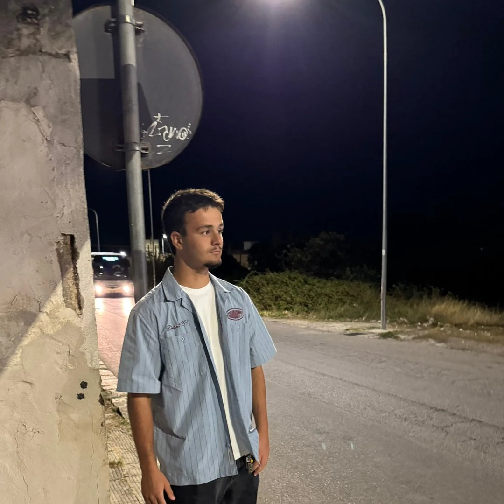
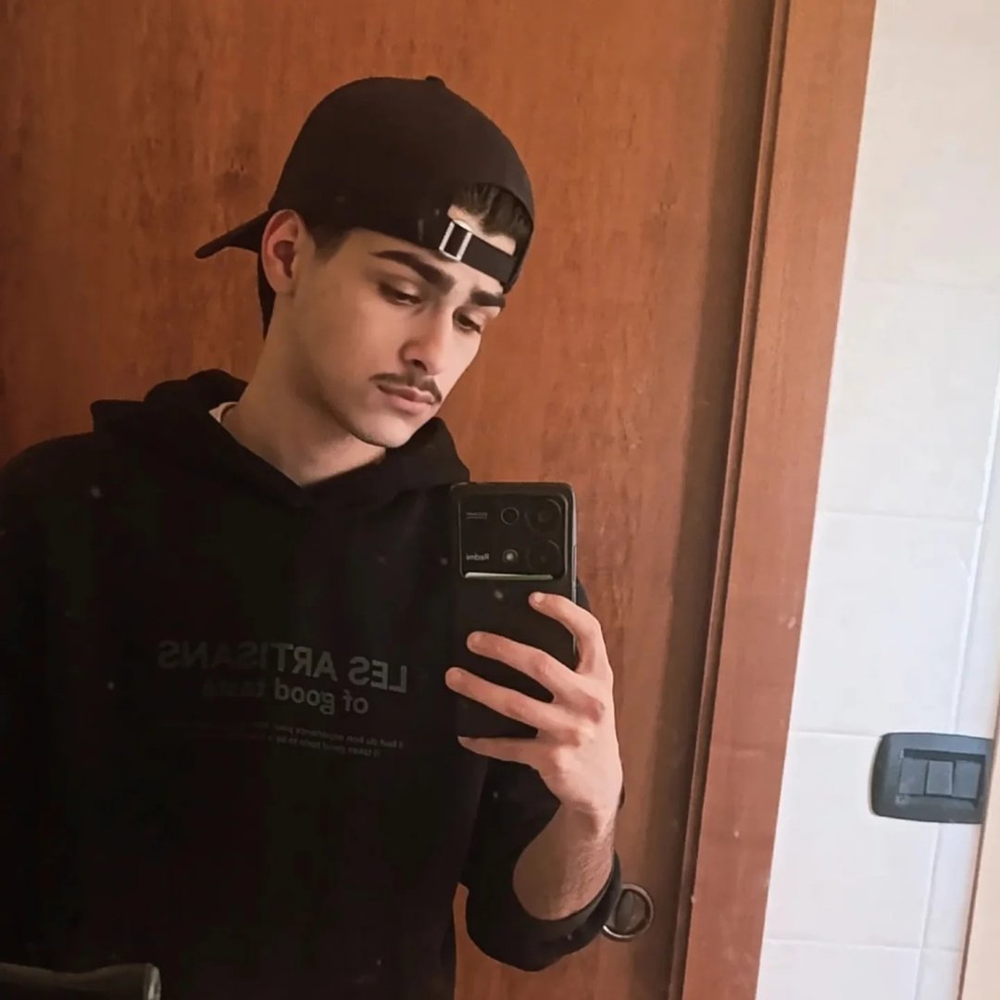
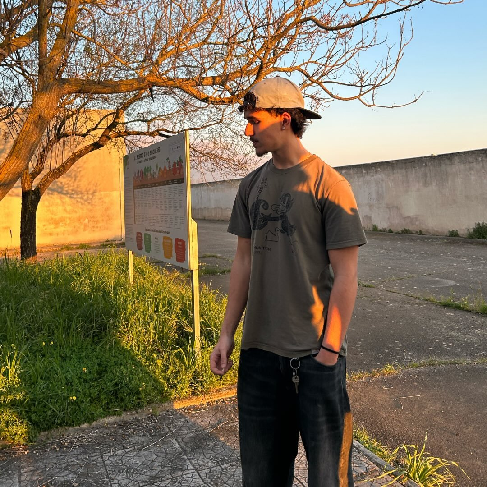

Passione per il territorio, visione per il futuro.

Design & Strategia

Sviluppo Tecnico

Ricerca & Contenuti
Siamo tre giovani del borgo uniti dalla stessa convinzione: che la cultura locale sia un patrimonio da proteggere, raccontare e condividere. Patronus è il nostro modo di restituire qualcosa a questa terra.
Leggi il Progetto